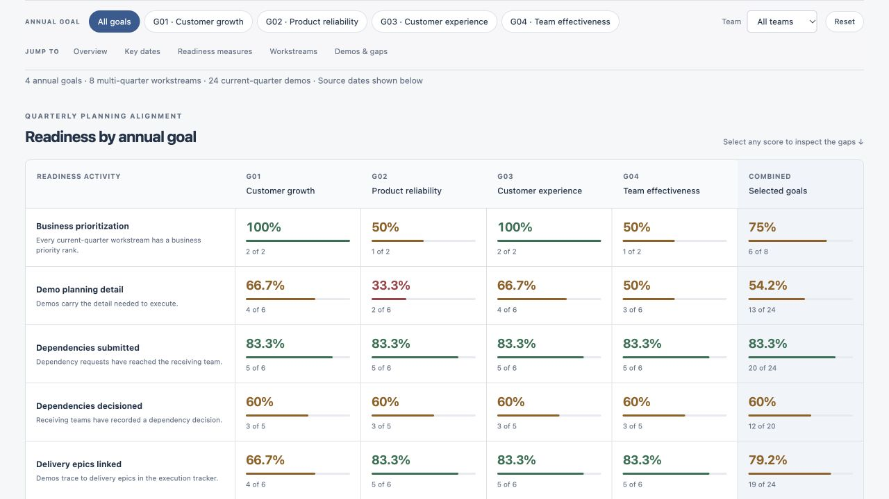

Build execution accountability
Connect initiative health, dependencies, and clear ownership through audits, dashboards, and recurring planning reviews.
Enterprise program leadership · Portfolio governance · AI enablement
I bring 15+ years of enterprise program leadership across technology and financial services. I build planning, governance, and adoption systems that turn strategy into scalable execution—from AI-enabled planning adoption across four teams and 500+ users at Intuit to execution alignment across 40+ global engineering organizations at Oracle, and digital transformation at Intel, Visa, and Wells Fargo.

Connect initiative health, dependencies, and clear ownership through audits, dashboards, and recurring planning reviews.
Turn portfolio signals into clear tradeoffs, executive choices, and accountable follow-through.
Help teams adopt AI-native workflows with measurable value, confidence, and durable behavior change.
Selected experience
Across AI adoption, cloud platforms, product operations, and digital transformation, the through line is the same: build clarity, alignment, and durable execution.
Enterprise Program Manager · AI Enablement & Adoption
Lead enterprise adoption of an AI-enabled planning and roadmapping platform across Product, Engineering, TPM, and Business Operations, connecting portfolio planning with execution and accountability.
Skills
AI Enablement & Adoption • Enterprise Transformation • Change Management • Portfolio Governance • Portfolio Planning & Roadmapping • Executive Stakeholder Management • Product Operations • Model Context Protocol (MCP) • User Acceptance Testing
Senior Principal Program Manager
Led enterprise transformation and release governance supporting Oracle Fusion Applications’ cloud transformation. Coordinated planning and dependencies across 40+ global engineering organizations and partnered with Product, Security, Compliance, and Operations to improve execution alignment and release readiness.
Skills
Enterprise Transformation • Technical Program Management • Cloud Transformation • Release Governance • Portfolio Planning • Risk & Dependency Management • Executive Reporting • FedRAMP Readiness • Executive Stakeholder Management
Senior NPI Program Manager
Established a PMO supporting a team of 20, building the governance, tooling, reporting, and operating cadences needed to coordinate new product introduction.
Skills
PMO Leadership • New Product Introduction • Cross-Functional Leadership • Governance • Operating Model Design • Program Planning • Executive Reporting • Risk & Dependency Management
Senior Program Manager · Digital Transformation & Strategic Programs
Led global digital transformation and strategic programs across Product, Engineering, Design, Content, and Marketing.
Skills
Strategic Program Leadership • Digital Transformation • Digital Marketing Strategy • Global Campaign Execution • PMO Leadership • Cross-Functional Leadership • Customer Experience • A/B Testing • Stakeholder Management
Implementation Lead
Led implementation of an enterprise benefits enrollment platform, coordinating delivery across digital, technology, operations, and business stakeholders.
Skills
Program Management • Governance • Operational Excellence • Enterprise Transformation • Risk Management • Stakeholder Alignment
Senior Program Manager · Digital Transformation & Strategic Programs
Led the Visa.com global redesign across business and technology organizations, aligning Product, Design, Engineering, and executive stakeholders.
Skills
Digital Transformation • Digital Strategy & Execution • Program Management • Content Governance • Release Management • Stakeholder Alignment • Cross-Functional Leadership
Program Management Specialist
Held program management roles across Razorfish, MRM, McCann Worldgroup, Publicis, and Scient, supporting digital, marketing, and enterprise operations initiatives.
Skills
Program Management • Digital Marketing • Digital Delivery • Cross-Functional Coordination • Stakeholder Management • Enterprise Operations
Senior Project Manager
Directed the end-to-end launch of WorldSavings.com, managing cross-functional teams to drive digital engagement, enhance online visibility, and optimize user experience.
Skills
Project Management • Website Launches • Cross-Functional Leadership • Customer Experience • Digital Engagement • Stakeholder Management
Customer Experience Project Manager
Led design and implementation of enterprise eBusiness and eCommerce solutions, driving enhanced customer experiences and digital platform adoption across the organization.
Skills
Project Management • Customer Experience • eCommerce • Digital Platform Implementation • Cross-Functional Coordination • Platform Adoption
Intuit · Planning enablement
A planning platform creates value when teams can use it consistently to coordinate initiatives, manage dependencies, and maintain execution visibility.
Across four teams and 500+ users, I combine change management and training with MCP-based audits, execution-health dashboards, and weekly status reviews. The annual Operations roadmap spans 1,000+ initiatives, with Jira linkage and pilot UAT supporting the connection between planning and execution.
Interactive prototype
Can leaders see what’s ready, what’s blocked, and where decisions are needed before the quarter begins? Explore a portfolio view connecting annual goals, workstreams, initiatives, and planning gaps.
Illustrates my approach to portfolio governance, dependency visibility, and execution accountability.

Try this: Open a demo in “Demos & readiness gaps” to inspect its planning checks and actions needed.
Interactive mockup · Fictional data · Illustrative daily-refresh concept
Where I create leverage
I operate where strategy, technology, people, and decisions have to become one coherent system.
Turn broad strategic direction into sequenced portfolios, operating models, and coordinated delivery across complex organizations.
Move AI from tool rollout to governed, measurable behavior change.
Design lightweight decision systems for risk, dependencies, tradeoffs, and accountability.
Give leaders a shared view of priorities, progress, and the decisions that matter now.
“The work is not adding process. It is creating enough clarity that the organization can move.”
Case study callout
At Oracle, I supported regulated cloud delivery and FedRAMP readiness by turning security, engineering, SaaS operations, audit, and executive requirements into an accountable governance rhythm.
Recognition & reputation
Credibility built through calm leadership, structured execution, and measurable delivery in high-pressure environments.
Alison brings calm, reason, and structure to complex, high-pressure programs. She has exceptional collaboration and relationship-building skills, with the ability to align teams, resolve conflict, and move challenging projects forward. Her program management and implementation expertise are second to none.
Alison led implementation for a complex program with more than 200 tactical deliverables, bringing strong ideas, execution discipline, and a drive for excellence. She adds immense value to large-scale project and implementation efforts.
Selected recognition
Integrated content into global campaign frameworks, increasing visibility and engagement.
Led digital marketing strategy for Intel's first activation at the Olympic Winter Games.
Recognized for campaign innovation that brought product stories to new audience segments.
Directed the .com strategy that simplified the PC innovation customer journey.
Leadership approach
I am most useful when the goal is ambitious, the environment is complex, and progress depends on many teams moving together.
My role is to make the work legible: clarify the outcome, surface the real dependencies, create decision mechanisms, and build an operating rhythm people can trust. Then I lead the change required to make the new system stick.
Search focus
I’m brought into complex environments where strategy is clear but execution needs structure—aligning leaders, clarifying priorities, operationalizing change, and creating decision rhythms that move work forward.
Senior Program Manager · Principal Program Manager · Senior Principal Program Manager · Technical Program Manager · AI Program Manager · Enterprise Transformation Lead · PMO Director · Portfolio Operations · Product Operations · Strategy & Operations · Business Operations · Chief of Staff · NPI Operations
AI Enablement & Adoption · AI-Enabled Workflows · Model Context Protocol (MCP) · MCP-Based Audits · Execution-Health Dashboards · User Acceptance Testing (UAT) · Dragonboat · Jira · GitHub · Confluence · Portfolio Planning · Roadmapping · OKRs · Operating Model Transformation · PMO Leadership · Executive Reporting · Agile · Scrum · SAFe · Kanban · Cloud Transformation · SaaS Platforms · Change Management · Release Governance · Risk Management · FedRAMP Readiness
I work at the intersection of Product, Engineering, Business Operations, and executive leadership—translating strategy into roadmaps, operating models, adoption plans, governance systems, and measurable execution.
Let's talk
I’m interested in senior-level opportunities across AI Strategy & Operations, Enterprise Transformation, Technical Program Management, PMO Leadership, Product Operations, Portfolio Operations, Strategy & Operations, and Chief of Staff roles—particularly in AI, SaaS, cloud platforms, cybersecurity, fintech, healthcare technology, and enterprise software.